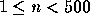

| Domino Effect |
Did you know that you can use domino bones for other things besides playing Dominoes? Take a number of dominoes and build a row by standing them on end with only a small distance in between. If you do it right, you can tip the first domino and cause all others to fall down in succession (this is where the phrase ``domino effect'' comes from).
While this is somewhat pointless with only a few dominoes, some people went to the opposite extreme in the early Eighties. Using millions of dominoes of different colors and materials to fill whole halls with elaborate patterns of falling dominoes, they created (short-lived) pieces of art. In these constructions, usually not only one but several rows of dominoes were falling at the same time. As you can imagine, timing is an essential factor here.
It is now your task to write a program that, given such a system of rows formed by dominoes, computes when and where the last domino falls. The system consists of several ``key dominoes'' connected by rows of simple dominoes. When a key domino falls, all rows connected to the domino will also start falling (except for the ones that have already fallen). When the falling rows reach other key dominoes that have not fallen yet, these other key dominoes will fall as well and set off the rows connected to them. Domino rows may start collapsing at either end. It is even possible that a row is collapsing on both ends, in which case the last domino falling in that row is somewhere between its key dominoes. You can assume that rows fall at a uniform rate.
The input file contains descriptions of several domino systems. The first line of each description contains two integers: the number n of key dominoes (  ) and the number m of rows between them. The key dominoes are numbered from 1 to n. There is at most one row between any pair of key dominoes and the domino graph is connected, i.e. there is at least one way to get from a domino to any other domino by following a series of domino rows.
The following m lines each contain three integers a, b, and l, stating that there is a row between key dominoes a and b that takes l seconds to fall down from end to end.
Each system is started by tipping over key domino number 1.
The file ends with an empty system (with n = m = 0), which should not be processed.
For each case output a line stating the number of the case (`System #1', `System #2', etc.). Then output a line containing the time when the last domino falls, exact to one digit to the right of the decimal point, and the location of the last domino falling, which is either at a key domino or between two key dominoes. Adhere to the format shown in the output sample. If you find several solutions, output only one of them. Output a blank line after each system.
2 1 1 2 27 3 3 1 2 5 1 3 5 2 3 5 0 0
System #1 The last domino falls after 27.0 seconds, at key domino 2. System #2 The last domino falls after 7.5 seconds, between key dominoes 2 and 3.